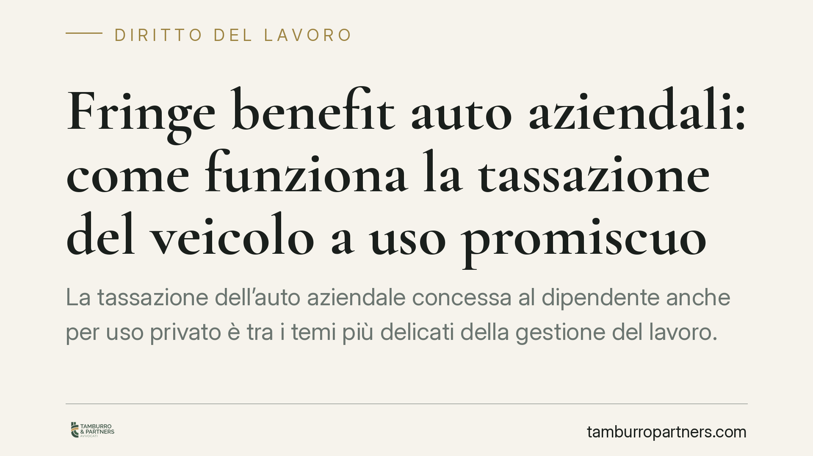

Fringe benefit auto aziendali: come funziona la tassazione del veicolo a uso promiscuo
La tassazione dell'auto aziendale concessa al dipendente anche per uso privato è tra i temi più delicati della gestione del lavoro. Il valore da assoggettare a contribuzione dipende oggi dalle emissioni di CO2 del veicolo. Comprendere il meccanismo di calcolo è essenziale per datori di lavoro e dipendenti, soprattutto in presenza di flotte datate o di eventuali interventi normativi in corso.

Il quadro normativo di riferimento
La disciplina del fringe benefit per le auto concesse in uso promiscuo al dipendente — cioè utilizzabili sia per ragioni di servizio sia per esigenze personali — è contenuta nell'art. 51, comma 4, lett. a) del TUIR (D.P.R. 917/1986).
Il meccanismo si fonda su un criterio forfettario e convenzionale: non si misura l'uso privato effettivo, ma si assume una percorrenza convenzionale annua di 15.000 km, moltiplicata per il costo chilometrico ACI del modello specifico. A questo valore si applica una percentuale che individua la quota imponibile.
La L. 160/2019 (Legge di Bilancio 2020) ha legato tale percentuale alle emissioni di CO2 del veicolo, con lo scopo dichiarato di incentivare le motorizzazioni meno inquinanti. Lo schema, per i veicoli di nuova immatricolazione e concessi in uso dopo l'entrata in vigore della riforma, prevede quattro fasce:
- 25% per emissioni fino a 60 g/km;
- 30% per emissioni superiori a 60 e fino a 160 g/km;
- 50% per emissioni superiori a 160 e fino a 190 g/km;
- 60% per emissioni superiori a 190 g/km.
Successivi interventi, a partire dalla Legge di Bilancio 2025, hanno aggiornato i criteri per i contratti stipulati dal 2025, con un trattamento di favore per i veicoli elettrici e ibridi plug-in. Chi gestisce flotte deve quindi verificare quale regime si applichi, poiché la data del contratto e la data di immatricolazione incidono sul calcolo.
Un chiarimento sui correttivi annunciati
Cirolano ipotesi di ulteriori modifiche — tra cui una maggiorazione del benefit per i veicoli più datati e un trattamento degli optional non valorizzati. Allo stato, non risultano estremi normativi certi e verificabili di un provvedimento già vigente in tal senso. Trattiamo pertanto queste ipotesi come in corso di definizione: non costituiscono diritto vigente e non vanno applicate finché non sia pubblicato un testo con estremi confermati in Gazzetta Ufficiale.
Su un tema che incide direttamente sulla busta paga e sul costo del lavoro, è preferibile fondarsi solo sulla disciplina effettivamente in vigore.
Un esempio di calcolo
Ipotizziamo un veicolo con costo chilometrico ACI di 0,50 €/km ed emissioni pari a 140 g/km (fascia 30%).
- Percorrenza convenzionale: 15.000 km
- Valore annuo convenzionale: 15.000 × 0,50 = 7.500 €
- Fringe benefit imponibile: 7.500 × 30% = 2.250 € annui (circa 187,50 € al mese)
Se lo stesso veicolo rientrasse nella fascia 50% (emissioni oltre 160 g/km), il benefit salirebbe a 3.750 € annui (312,50 € al mese). La differenza di imponibile, a parità di modello, dipende quindi in modo rilevante dalla fascia di emissione.
Effetti per dipendente e datore di lavoro
Per il dipendente, il fringe benefit è reddito da lavoro: aumenta la base imponibile IRPEF e contributiva. Le eventuali trattenute in busta paga a titolo di corrispettivo per l'uso privato riducono il valore tassabile, fino ad azzerarlo se pari o superiori al benefit convenzionale.
Per il datore di lavoro, la gestione corretta del benefit evita contestazioni in sede di verifica da parte dell'Agenzia delle Entrate e degli enti previdenziali. Le flotte datate, in particolare, meritano attenzione: veicoli con emissioni elevate ricadono nelle fasce più onerose, con impatto sul netto percepito dai dipendenti e potenziale tensione nelle relazioni interne.
Cosa fare in concreto
- Censire la flotta per data di immatricolazione, data del contratto di assegnazione ed emissioni di CO2, così da individuare il regime applicabile a ciascun veicolo.
- Verificare il costo chilometrico ACI aggiornato per ogni modello e ricalcolare il benefit imponibile su base annua.
- Rivedere le policy di assegnazione, valutando se le eventuali trattenute siano correttamente valorizzate a riduzione del benefit.
- Monitorare l'evoluzione normativa prima di modificare i cedolini: non applicare correttivi non ancora confermati da testi ufficiali.
- Documentare i criteri adottati, a tutela in caso di controllo.
---
Contributo informativo a cura di Tamburro & Partners Avvocati — Avv. Giuseppe Tamburro. Non costituisce parere legale.
Ogni storia di lavoro ha i suoi tempi.
Se gestisci HR e vuoi un confronto su contenzioso, ispezioni o licenziamenti, scrivi allo studio. Ti rispondiamo entro un giorno lavorativo.